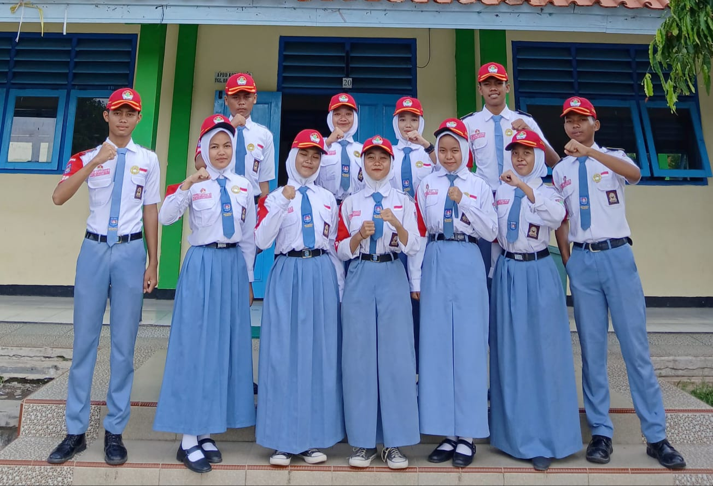
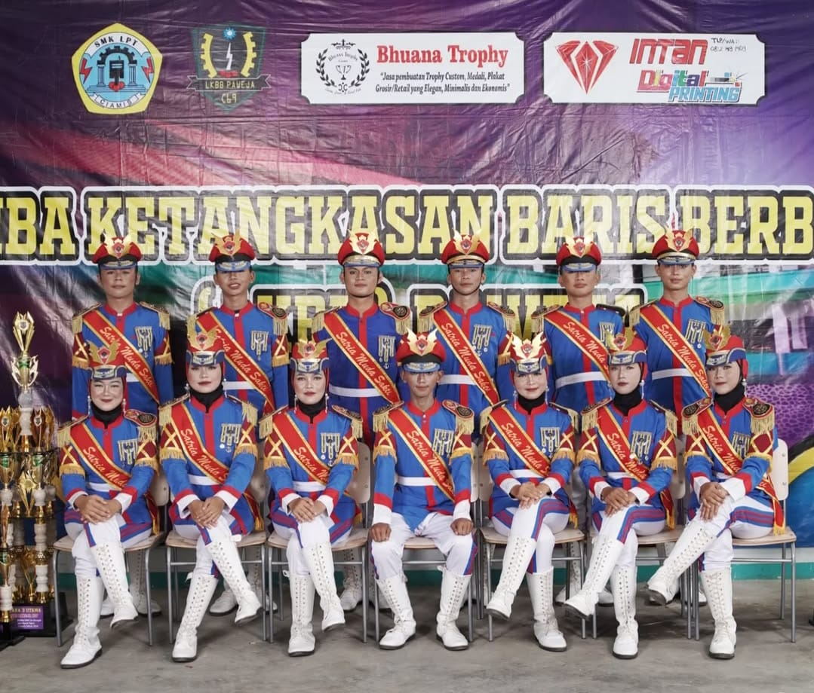

Paskibra
Pengalaman dan Kegiatan Selama Mengikuti Organisasi Paskibra

Kegiatan Upacara & Latihan
Bertugas dalam upacara bendera sekolah.
Mengikuti latihan baris-berbaris secara rutin.
Melatih kedisiplinan, fokus, dan tanggung jawab.
Meningkatkan kekompakan dan kerja sama tim.
Kegiatan Event / Lomba
Mengikuti lomba baris-berbaris antar sekolah.
Meningkatkan kekompakan dan kerja sama tim.
Meningkatkan kreativitas dan keberanian tampil.
Melatih mental, disiplin, dan rasa percaya diri.

← Kembali